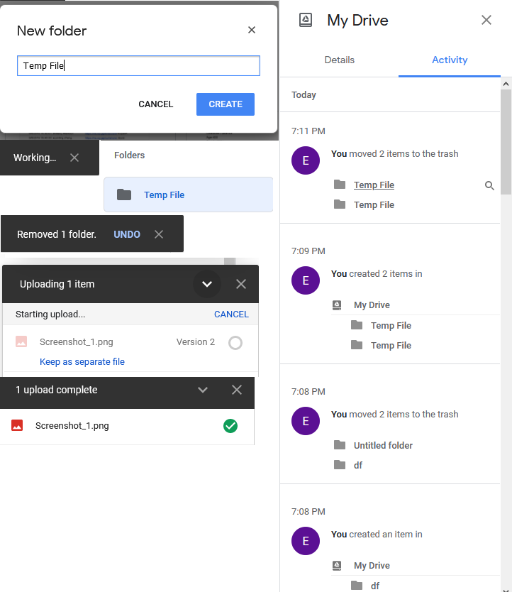
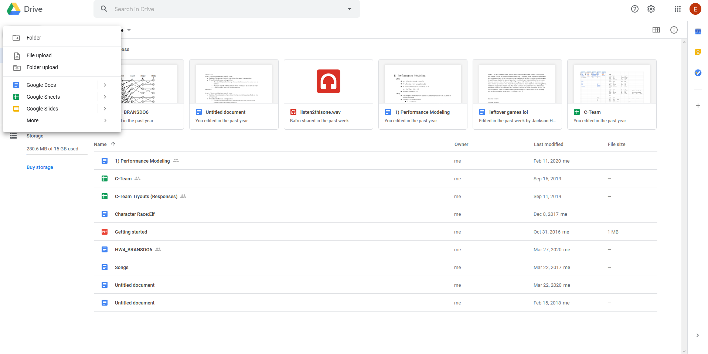
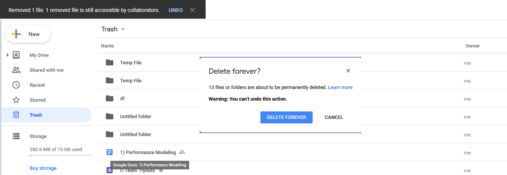
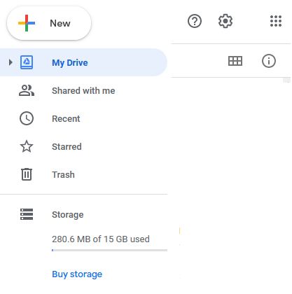
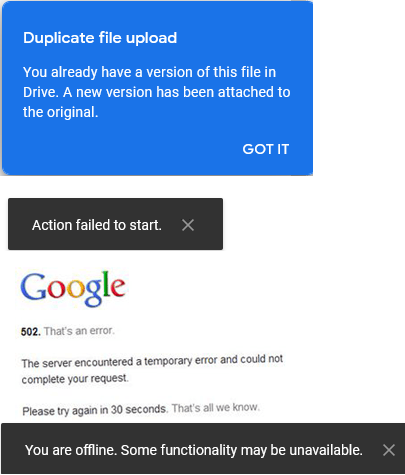
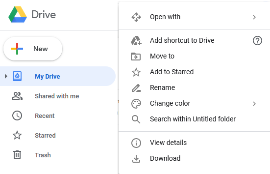
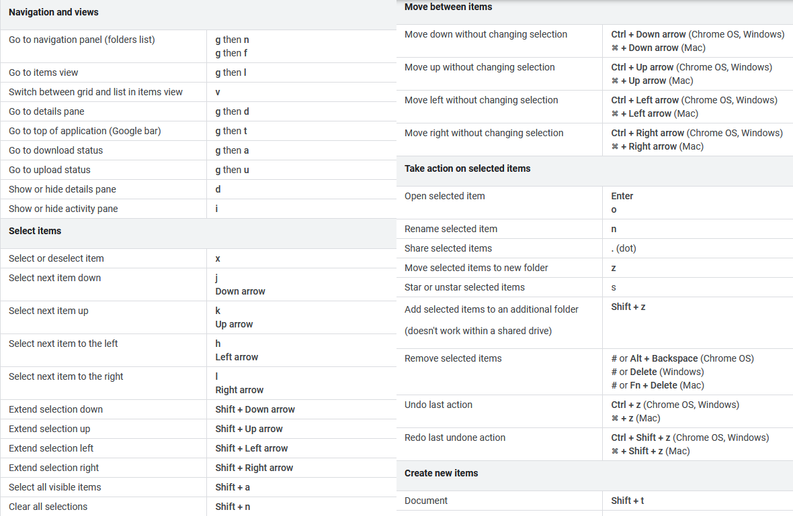
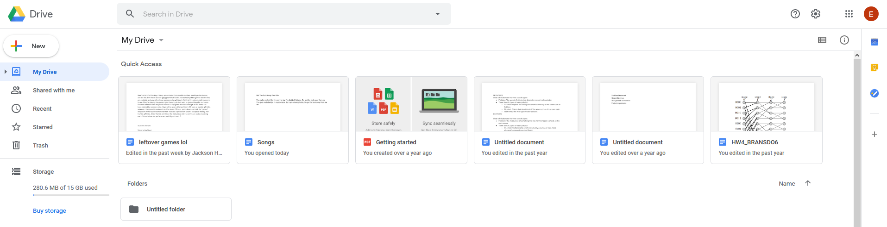
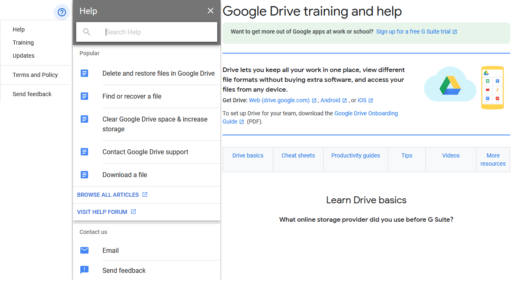

A Heuristic Evaluation of Google Drive
By Ethan Bransdorfer
Visibility of system status

Google drive has a variety of alerts that inform the user of the status of actions. When creating a folder, it will show a working alert, then once it's finished, the folder will appear on the screen. When removing anything, it will create a remove alert with the option to undo. It also has the option of enabling a activity dropdown which will show any action that has been taken.
Match between system and the real world

Folders are folders, they function exactly like their real-world counterpart, the icon being modeled after them. You can drag and drop files into the folders. The question mark icon to represent help is universally known. No terminology appears that is overly techincal. Trash is represented by a garbage can, and serves the same function. The storage icon resembles three stacked hard-drives.
User control and freedom

Google Drive supports the undo function and the Trash function. Whenever you remove a file, it creates a pop-up and you'll be able to undo it. Alternatively, if you misclick and don't click undo, there is still the option of going into the Trash. Then you can restore the file or you can delete forever. The delete forever will create a pop-up to confirm. So there are three actions you have to take before you can delete something. So the chance of an errant mistake having irrepareable results is very low.
Consistency and standards

Drive follows all the standards that are well-known. Files that are text files are blue in color, data files like xlsx and csv are green in color. A plus icon is used to represent the option of creating a new file. Finally, the icons are the same used across most apps. A gear for settings, a question mark for help, starred a star, and so on.
Error prevention.

Drive being a relatively simple file hoster does not have a lot of complexity, there are not a lot of actions that can be taken. The only error messages that appear are when uploading the same file, giving the option of keeping the second uploaded file as a new version or renaming the file. There is not a lot to prevent slips, due to the fact that there are very little slips that could occur. Perhaps Drive could have an alert if you're reusing a folder or file name, but nothing like that appears.
Recognition rather than recall

Drive has nothing very confusing about it or very confusing things to recall. But it still assists through the use of helpful text descriptions next to the icon to show what each icon represents. The interface is simple and easy to remember.
Flexibility and efficiency of use

Drive supports every single action you could possibly need with various shortcuts, you don't need a mouse to accomplish what you need. For mouse it supports drag and drop, and mass selection to speed up moving files. There are also options to condense the view, so that files don't show thumbnails.
Aesthetic and minimalist design.

Drive has a very minimilistic approach everything you need to know is directly shown, you don't have to navigate through a series of drop-downs to do what you need, everything is found in one or two clicks. If you have no need of the preview thumbnails, those can be condensed down. Drive has a very high signal to noise ratio.
Help users recognize, diagnose, and recover from errors
Drive itself does not have errors that can occur. You can get errors with the servers that's hosting, or if your internet is having trouble, it will give some alerts.
Help and documentation

Drive has a variety of resources to help when there is a problem. It has the classic help menu that will give you suggestions as you type to help with your problems. Alternatively it also has training resources to help you learn how to do things from scratch. The help options concisly list the actions you can take to help with your problems.